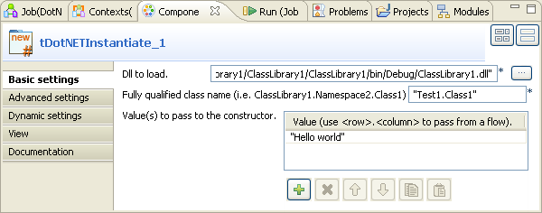
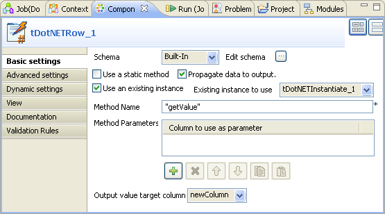
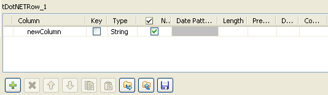
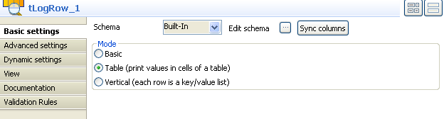

|
Famille de composant |
DotNET | |||||||
|
Fonction |
Le composant tDotNETRow envoie des données à partir de bibliothèques et vers des bibliothèques et des classes dans .NET ou d'autres fichiers DLL personnalisés. | |||||||
|
Objectif |
Le tDotNETRow vous permet de faciliter la transformation de données à l'aide de classes .NET built-in ou personnalisées. | |||||||
|
Basic settings |
Schema et Edit schema |
Un schéma est une description de lignes, i.e., il définit le nombre de champs qui sont traités et passés au composant suivant. Le schéma est soit local (Built-in), soit distant (Repository). | ||||||
|
|
|
Built-in : Le schéma est créé et conservé pour ce composant seulement. Voir également le Guide utilisateur de Talend Open Studio. | ||||||
|
|
|
Repository : Le schéma existe déjà et est stocké dans le Repository. Ainsi, il peut être réutilisé. Voir également le Guide utilisateur de Talend Open Studio. | ||||||
| Use a static method |
Cochez cette case pour invoquer une méthode statique dans .NET. Cela désactivera la case Use an existing instance. | |||||||
| Propagate a data to output |
Cochez cette case afin de propager des données transformées vers la sortie | |||||||
| Use an existing instance |
Cochez cette case pour réutiliser une instance existante d'un objet.NET dans la liste Existing instance to use. Existing instance to use : Sélectionnez une instance existante d'objets .NET créés par d'autres composants .NET de la liste.
| |||||||
|
Dll to load | Saisissez dans ce champ le chemin d'accès à une bibliothèque DLL contenant la (les) classe(s) qui vous intéresse(nt) ou saisissez le nom de l'Assembly ou cliquez sur le bouton [...] afin de parcourir votre système jusqu'au répertoire de votre bibliothèque. Par exemple, System.Data, Version=2.0.0.0, Culture=neutral, PublicKeyToken=b77a5c561934e089 pour une Assembly OleDb. | |||||||
|
|
Fully qualified class name(i.e. ClassLibrary1.NameSpace2.Class1) |
Renseignez ce champ en saisissant le chemin complet de la classe (FQN). | ||||||
|
|
Method name |
Renseignez ce champ en saisissant le nom de la méthode à invoquer dans .NET. | ||||||
| Value(s) to pass to the constructor |
Cliquez sur le bouton [+] pour ajouter une ou plusieurs valeur(s) à passer au constructeur de l'objet. Ou, laissez vide ce tableau afin d'appeler un constructeur par défaut pour l'objet. La/les valeur(s) valide(s) doi(ven)t être les paramètres requis par la classe à utiliser. | |||||||
| Method Parameters |
Cliquez sur le bouton [+] pour ajouter une ou plusieurs ligne(s) de paramètres à passer à la méthode. | |||||||
| Output value target column |
Dans la liste, sélectionnez une colonne de la lignes de sortie afin de lui attribuer une valeur. | |||||||
| Advanced settings | Create a new instance at each row |
Cochez cette case pour créer une nouvelle instance à chaque ligne qui passe dans le composant. | ||||||
| Method doesn't return a value |
Cochez cette case afin d'invoquer une méthode sans retourner de valeur comme résultat du traitement. | |||||||
| Returns an instance of a .NET Object |
Cochez cette case pour retourner une instance d'un objet .NET comme résultat d'une méthode invoquée. | |||||||
| Store the returned value for later use |
Cochez cette case afin de stocker la valeur retournée d'une méthode pour une utilisation ultérieure dans un autre composant tDotNETRow. | |||||||
|
tStatCatcher Statistics |
Cochez cette case pour collecter les données de log au niveau du composant. | |||||||
| Enable parallel execution |
Cochez cette case permet de traiter plusieurs flux de données simultanément. Cela permet de traiter les données plus rapidement. Dans le champ Number of parallel executions, vous pouvez : - Saisir le nombre d’exécutions parallèles désiré - Appuyer sur Ctrl+Espace et sélectionner la variable de contexte dans la liste. Pour plus d’informations, consultez le Guide utilisateur de Talend Open Studio.
| |||||||
|
Utilisation |
Ce composant est utilisé pour communiquer avec des objets .NET. Pour utiliser ce composant, vous devez d'abord installer les fichiers DLLs d'exécution, par exemple janet-win32.dll, sous Windows 32 bits et janet-win64.dll sous Windows 64 bits, dans le package redistribuable Microsoft Visual C++, afin d'éviter les erreurs telles que UnsatisfiedLinkError sur les DLL dépendants. Assurez-vous que le DLL d'exécution et tous les autres DLL dont dépend le DLL à appeler sont entièrement installés et que leurs versions sont en adéquation.
| |||||||
![[Note]](../images/note.png)
![[Avertissement]](../images/warning.png)
Ce scénario décrit un Job à trois composants utilisant une bibliothèque DLL contenant une classe appelée Test1.Class1. On invoque une méthode de cette classe qui traite la valeur et écrit les données dans la console.

Avant de reproduire ce scénario, vous devez d'abord construire votre environnement d'exécution.
Créez le DLL à charger par le tDotNETInstantiate
Cette classe d'exemple construite dans .NET se présente comme suit :
using System; using System.Collections.Generic; using System.Text; namespace Test1 { public class Class1 { string s = null; public Class1(string s) { this.s = s; } public string getValue() { return "Return Value from Class1: " + s; } } }Cette classe lit la valeur d'entrée et ajoute le texte Return Value from Class1: devant cette valeur. La classe est compilée à l'aide du dernier .NET.
Installez le fichier DLL d'exécution à partir du dernier .NET. Dans ce scénario, utilisez janet-win32.dll sous Windows 32 bits et placez-le dans le dossier System32.
Le DLL d'exécution est compatible avec le DLL à charger.
Déposez les composants suivants de la Palette dans l'espace de modélisation graphique : tDotNETInstantiate, tDotNETRow et tLogRow.
Connectez le tDotNETInstantiate au tDotNETRow à l'aide d'un lien Trigger > OnSubjobOk.
Reliez le tDotNETRow au tLogRow à l'aide d'un lien Row > Main.
Double-cliquez sur le tDotNETInstantiate pour afficher sa vue Basic settings et définir ses propriétés de base.
Cliquez sur le bouton [...] à côté du champ Dll to load et parcourez votre système jusqu'au fichier dll à charger. Vous pouvez également renseigner le champ avec une Assembly. Dans cet exemple, utilisez :
"C:/Program Files/ClassLibrary1/bin/Debug/ClassLibrary1.dll""
Dans le champ Fully qualified class name, saisissez un nom de classe valide à utiliser. Dans cet exemple, saisissez :
"Test1.Class1"
Cliquez sur le bouton [+] sous la table Value(s) to pass to the constructor afin d'ajouter une ligne pour la valeur à passer au constructeur.
Dans cet exemple, saisissez :
"Hello world"
Double-cliquez sur le composant tDotNETRow afin d'afficher sa vue Basic settings et définir ses propriétés de base.
Cochez la case Propagate data to output.
Cochez la case Use an existing instance et sélectionnez tDotNETInstantiate_1 dans la liste Existing instance to use.
Renseignez le champ Method Name avec le nom de la méthode à utiliser. Dans cet exemple, utilisez "getValue".
Cliquez sur le bouton [...] à côté du champ Edit schema pour ajouter une colonne au schéma.
Cliquez sur le bouton [+] afin d'ajouter une colonne au schéma et cliquez sur OK pour sauvegarder les modifications.
Sélectionnez newColumn dans la liste Output value target column.
Laissez les autres paramètres tels qu'ils sont.
Double-cliquez sur le tLogRow afin d'afficher sa vue Basic settings et définir ses propriétés de base.
Cliquez sur le bouton Sync columns afin de récupérer le schéma défini dans le composant précédent.
Sélectionnez Table dans la zone Mode.
Sauvegardez votre Job et appuyez sur la touche F6 pour l'exécuter.
Vous pouvez constater, dans les résultats, que le texte Return Value
from Class1 est ajouté devant la valeur récupérée Hello
world.